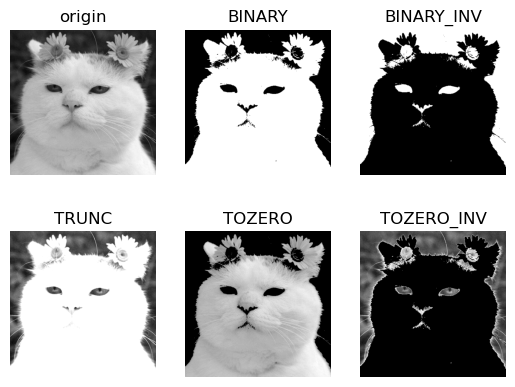
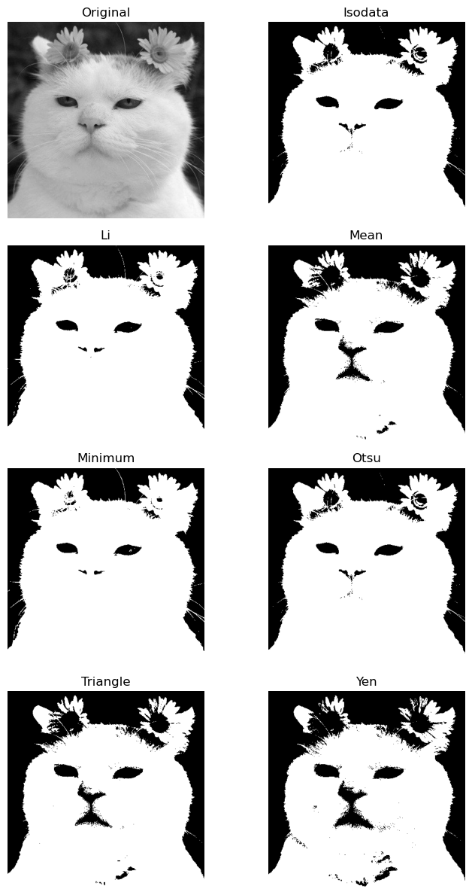
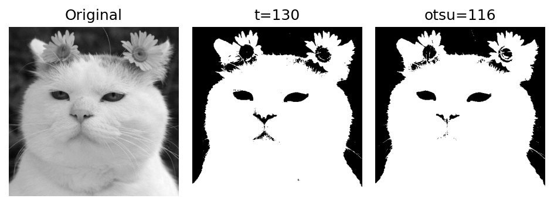
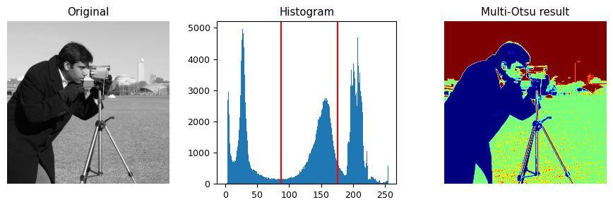
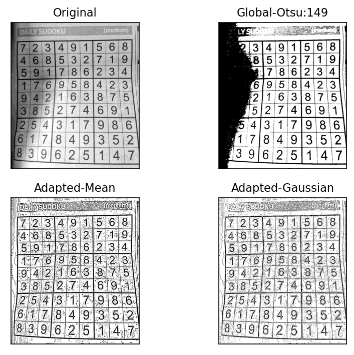
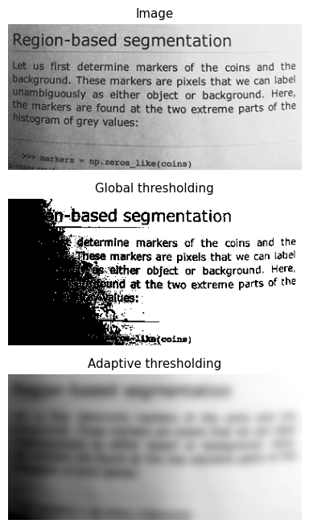

임계처리
Contents
임계처리¶
임계처리(thresholding)는 이미지를 검은색과 흰색으로만 표혀하는 것으로 이진화(binary) 이미지라고 한다. 이미지에서 원하는 피사체의 모양을 좀 더 정확히 판단하기 위해서 사용한다. 예를 들면, 글씨만 분리하거나 배경에서 전경을 분리하는 작업 등이다.
import cv2
import numpy as np
import matplotlib.pylab as plt
image = cv2.imread('./img/cat-01.jpg', cv2.IMREAD_GRAYSCALE)
thresh_np = np.zeros_like(image)
thresh_np[image > 127] = 255
ret, thresh_cv = cv2.threshold(image, 127, 255, cv2.THRESH_BINARY)
print(ret)
images = {
'Original': image, 'NumPy API': thresh_np, 'cv2.threshold': thresh_cv
}
plt.figure(dpi=100)
for i , (key, value) in enumerate(images.items()):
plt.subplot(1, 3, i+1)
plt.title(key)
plt.imshow(value, cmap='gray')
plt.axis('off')
plt.tight_layout()
plt.show()
127.0
import cv2
import numpy as np
import matplotlib.pylab as plt
image = cv2.imread('./img/cat-01.jpg', cv2.IMREAD_GRAYSCALE)
_, t_bin = cv2.threshold(image, 127, 255, cv2.THRESH_BINARY)
_, t_bininv = cv2.threshold(image, 127, 255, cv2.THRESH_BINARY_INV)
_, t_truc = cv2.threshold(image, 127, 255, cv2.THRESH_TRUNC)
_, t_2zr = cv2.threshold(image, 127, 255, cv2.THRESH_TOZERO)
_, t_2zrinv = cv2.threshold(image, 127, 255, cv2.THRESH_TOZERO_INV)
images = {
'origin':img, 'BINARY':t_bin, 'BINARY_INV':t_bininv,
'TRUNC':t_truc, 'TOZERO':t_2zr, 'TOZERO_INV':t_2zrinv
}
for i, (key, value) in enumerate(images.items()):
plt.subplot(2,3, i+1)
plt.title(key)
plt.imshow(value, cmap='gray')
plt.axis('off')
plt.show()

import matplotlib
import matplotlib.pyplot as plt
from skimage import data
from skimage.filters import try_all_threshold
image = cv2.imread('./img/cat-01.jpg', cv2.IMREAD_GRAYSCALE)
fig, axes = try_all_threshold(image, figsize=(10, 12), verbose=False)
fig.tight_layout()
plt.show()

import cv2
import numpy as np
import matplotlib.pylab as plt
image = cv2.imread('./img/cat-01.jpg', cv2.IMREAD_GRAYSCALE)
_, t_130 = cv2.threshold(image, 130, 255, cv2.THRESH_BINARY)
t, t_otsu = cv2.threshold(image, -1, 255, cv2.THRESH_BINARY | cv2.THRESH_OTSU)
imgs = {'Original': img, 't=130':t_130, 'otsu=%d'%t: t_otsu}
plt.figure(dpi=150)
for i , (key, value) in enumerate(imgs.items()):
plt.subplot(1, 3, i+1)
plt.title(key)
plt.imshow(value, cmap='gray')
plt.axis('off')
plt.tight_layout()
plt.show()

오츠 알고리즘¶
바이너리 이미지를 만들 때 중요한 작업은 경계 값을 어떻게 정의할 것인가? 적절한 경계 값을 찾는 방법은 매우 어렵다. 1979년 오츠 노부유키는 반복적인 시도 없이 한 번에 경계 값을 찾을 수 있는 방법을 제안했다. 오츠의 이진화 알고리즘(Otsu’s binarization algorithm)이라고 한다. 오츠의 알고리즘은 경계값을 임의로 정해 픽셀들을 두 부류로 나누고 두 부류의 명암 분포를 반복해서 구한 다음 명암 분포를 가장 균일하게 하는 경계 값을 선택한다.
\[\sigma_{w}^{2}(t)=w_{1}(t)\sigma_{1}^{2}(t)+w_{2}(t)\sigma_{2}^{2}(t)\]
\(t\): 0-255, 경계값
\(w_{1}, w_{2}\): 각 부류의 비율 가중치
\(\sigma_{1}^{2},\sigma_{2}^{2}\): 각 부류의 분산
def otsu(gray):
pixel_number = gray.shape[0] * gray.shape[1]
mean_weight = 1.0 / pixel_number
his, bins = np.histogram(gray, np.arange(0,257))
final_thresh = -1
final_value = -1
intensity_arr = np.arange(256)
for t in bins[1:-1]: # This goes from 1 to 254 uint8 range (Pretty sure wont be those values)
pcb = np.sum(his[:t])
pcf = np.sum(his[t:])
Wb = pcb * mean_weight
Wf = pcf * mean_weight
mub = np.sum(intensity_arr[:t]*his[:t]) / float(pcb)
muf = np.sum(intensity_arr[t:]*his[t:]) / float(pcf)
#print mub, muf
value = Wb * Wf * (mub - muf) ** 2
if value > final_value:
final_thresh = t
final_value = value
final_img = gray.copy()
print(final_thresh)
final_img[gray > final_thresh] = 255
final_img[gray < final_thresh] = 0
return final_img
img = cv2.imread('./img/cat-01.jpg', cv2.IMREAD_GRAYSCALE)
plt.imshow(otsu(img), cmap='gray')
plt.show()
117
<ipython-input-43-3a4416b54896>:15: RuntimeWarning: invalid value encountered in true_divide
mub = np.sum(intensity_arr[:t]*his[:t]) / float(pcb)
<ipython-input-43-3a4416b54896>:16: RuntimeWarning: invalid value encountered in true_divide
muf = np.sum(intensity_arr[t:]*his[t:]) / float(pcf)
import matplotlib
import matplotlib.pyplot as plt
import numpy as np
from skimage import data
from skimage.filters import threshold_multiotsu
matplotlib.rcParams['font.size'] = 9
image = data.camera()
thresholds = threshold_multiotsu(image)
regions = np.digitize(image, bins=thresholds)
fig, axes = plt.subplots(nrows=1, ncols=3, figsize=(9, 3))
axes[0].imshow(image, cmap='gray')
axes[0].set_title('Original')
axes[0].axis('off')
axes[1].hist(image.ravel(), bins=255)
axes[1].set_title('Histogram')
for thresh in thresholds:
axes[1].axvline(thresh, color='r')
axes[2].imshow(regions, cmap='jet')
axes[2].set_title('Multi-Otsu result')
axes[2].axis('off')
fig.tight_layout()
plt.show()

적응형 임계처리¶
이미지 전역을 임계처리하는 것이 아닌 이미지를 여러 영역으로 나눈 다음 그 주변 픽셀 값만 가지고 계산해 경계 값을 구하는 것을 적응형 임계처리(adaptive threshold)이다.
import cv2
import numpy as np
import matplotlib.pyplot as plt
blk_size = 9
C = 5
image = cv2.imread('./img/sudoku.jpg', cv2.IMREAD_GRAYSCALE)
ret, th1 = cv2.threshold(image, 0, 255, cv2.THRESH_BINARY | cv2.THRESH_OTSU)
th2 = cv2.adaptiveThreshold(
image,
255,
cv2.ADAPTIVE_THRESH_MEAN_C,
cv2.THRESH_BINARY,
blk_size,
C
)
th3 = cv2.adaptiveThreshold(
image,
255,
cv2.ADAPTIVE_THRESH_GAUSSIAN_C,
cv2.THRESH_BINARY,
blk_size,
C
)
images = {
'Original': img, 'Global-Otsu:%d'%ret:th1,
'Adapted-Mean':th2, 'Adapted-Gaussian': th3
}
plt.figure(dpi=150)
for i, (k, v) in enumerate(images.items()):
plt.subplot(2,2,i+1)
plt.title(k)
plt.imshow(v,'gray')
plt.xticks([]); plt.yticks([])
plt.tight_layout()
plt.show()

import matplotlib.pyplot as plt
from skimage import data
from skimage.filters import threshold_otsu
from skimage import filters
image = data.page()
global_thresh = threshold_otsu(image)
binary_global = image > global_thresh
block_size = 35
binary_adaptive = filters.threshold_local(image, block_size, offset=10)
fig, axes = plt.subplots(nrows=3, figsize=(7, 8))
ax0, ax1, ax2 = axes
plt.gray()
ax0.imshow(image)
ax0.set_title('Image')
ax1.imshow(binary_global)
ax1.set_title('Global thresholding')
ax2.imshow(binary_adaptive)
ax2.set_title('Adaptive thresholding')
for ax in axes:
ax.axis('off')
plt.show()
